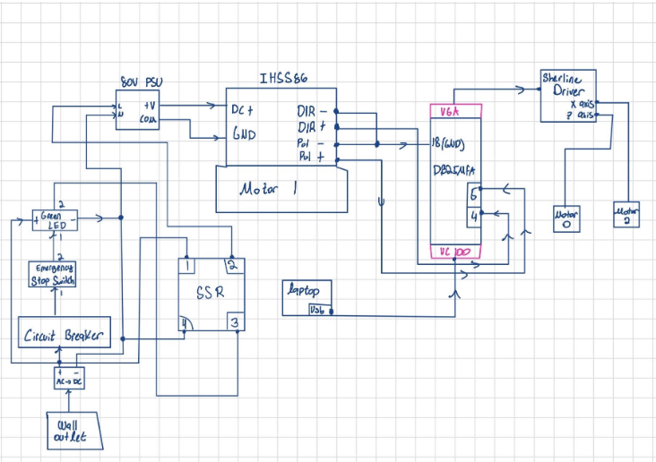

MOTION CONTROL & HARDWARE INTEGRATION
Three-Axis CNC Control System
Integrated a third controlled motor axis into an existing CNC platform, working across motor drivers, control signals, power distribution, safety circuitry, machine-control software, and system calibration.

CNC control hardware used to integrate and test the additional motor axis.
OVERVIEW
Expanding an existing machine from two controlled axes to three
During my manufacturing engineering internship at Free Flow Medical, I worked on upgrading an existing CNC system that was originally configured for two controlled axes.
The goal was to integrate an additional motor and closed-loop stepper drive while maintaining reliable operation of the existing machine. The project required changes across the electrical system, motion controller configuration, software setup, and motor tuning.
SYSTEM ARCHITECTURE
Connecting motion software to physical motor control
The machine used Mach4 control software with a UC100 motion controller and breakout hardware to convert software motion commands into pulse and direction signals for the motor drives.
The additional axis required integrating a new closed-loop stepper motor and driver, assigning control signals, connecting power, configuring the axis in Mach4, and tuning the motor so software commands produced accurate physical motion.

Electrical and control-system schematic used during the CNC integration project.
THE CHALLENGE
The problem crossed both hardware and software
When the new motor initially failed to respond correctly, there was no single obvious failure point. The problem could have been caused by the driver wiring, breakout-board pin assignments, motion-controller configuration, Mach4 profile, or motor tuning.
Instead of changing several variables at once, I broke the system into smaller sections and verified each stage independently.
DEBUGGING PROCESS
Working from electrical signals up to full machine motion
01
Verify Power
Confirmed the motor driver and power supply were operating correctly before troubleshooting the control signals.
02
Check Signal Wiring
Used a multimeter to validate ground connections and monitor direction-signal changes while jogging the axis through Mach4.
03
Validate I/O Mapping
Tested breakout-board pin assignments and confirmed that the software configuration matched the physical wiring.
04
Configure Motion Software
Created and configured a Mach4 machine profile that supported the additional axis and ensured the UC100 motion-controller plugin was operating correctly.
05
Tune the Motor
Adjusted motor velocity, acceleration, and motion parameters until the new axis moved smoothly rather than producing inconsistent or jerky motion.
06
Calibrate Motion
Compared commanded movement with actual shaft rotation and adjusted the axis calibration until requested angular movement matched the physical output.
SIGNAL VALIDATION
Using measurements instead of guessing
A key part of the troubleshooting process was verifying that the motion controller was actually generating electrical signals before assuming the motor or driver was faulty.
I used a multimeter to monitor the direction output while jogging the machine and verified the signal changed between approximately 0 V and 5 V depending on commanded direction. This helped confirm that the software and motion controller were communicating with the breakout board.
POWER & SAFETY
Integrating the motor into the machine's power system
The motor integration also required working with the machine's power and safety circuitry. I helped incorporate power distribution, a circuit breaker, emergency-stop functionality, switching, and relay-based safety control into the system.
Each stage was tested individually before the complete chain was operated together, reducing the risk of troubleshooting several unknowns at the same time.
FINAL RESULT
Reliable three-axis operation with calibrated rotary motion
After working through the wiring, controller configuration, software profile, and motor tuning, the additional axis operated reliably alongside the machine's existing axes.
The rotary axis was calibrated so programmed angular commands produced corresponding physical shaft movement, allowing the machine to accept coordinated motion commands through Mach4.
KEY TAKEAWAYS
Debugging the complete system
The biggest lesson from this project was learning to troubleshoot across electrical hardware, control electronics, and software configuration instead of treating them as separate systems.
Breaking the problem into measurable stages made it possible to isolate faults efficiently and distinguish wiring problems from configuration or tuning problems.